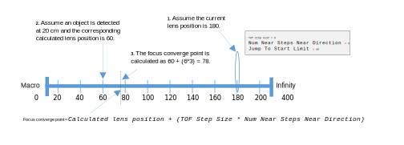
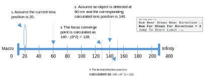

The fine search in the TOF algorithm is contrast-based. The boundary for the fine search is the focus converge point at the near side. The boundary at the far side is set using the Num Far Steps Near Direction parameter or the Num Far Steps Far Direction depending on the direction of lens move. The following image builds on examples in the previous section. It shows how the parameters are used to set the fine search boundary when the lens move is towards the macro side.
These examples show how the parameters are used to set the fine search boundary when the lens move is towards the infinity side.
Ideally it is good to have a larger number for the Num Near Steps parameters and a smaller number for Num Far Steps parameters. This is because it is good to exit focus convergence and start the fine search early to reduce focus miss and overshooting. The Num Far Steps parameters are kept small because if the focus is not found at the end, the fine search continues until it finds a peak.